Urgent assets first.
Retail deadlines set the order. The pieces with the earliest print and upload dates moved before anything else.
A MONO case study · MOMENTUM 5 Wireless
Sennheiser’s global team supplied one campaign. We extended it into everything Australia and New Zealand needed to launch, in under six weeks.
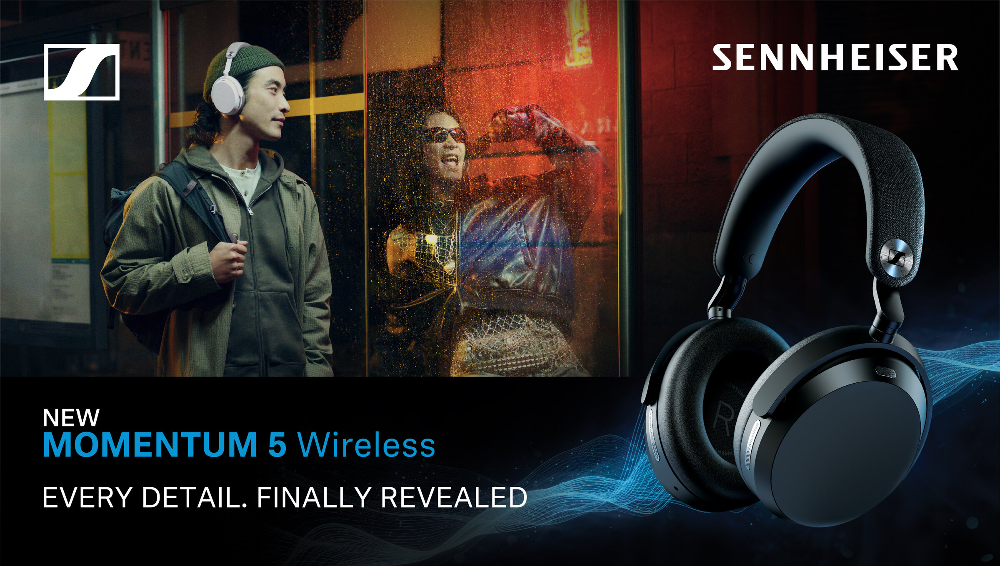
The launch
MOMENTUM 5 Wireless is Sennheiser’s flagship wireless headphone, backed by a substantial media and retail launch on both sides of the Tasman.
The campaign creative arrived locked. The local job was everything after that: retail media, banners and displays, out-of-home, video, in-store and print, each to a different spec and a different deadline.
The first brief landed on 5 June and the campaign went live on 15 July. With retail deadlines and late requests, the work couldn’t be made one piece after another.
01 / Retail and in store
One retail key visual, adapted to each retailer’s own templates, safe zones and print specs.
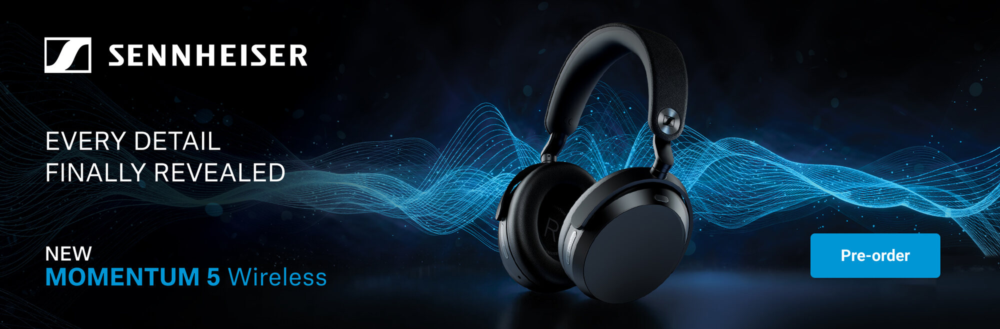
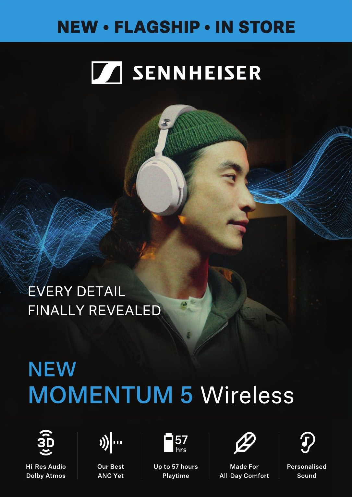
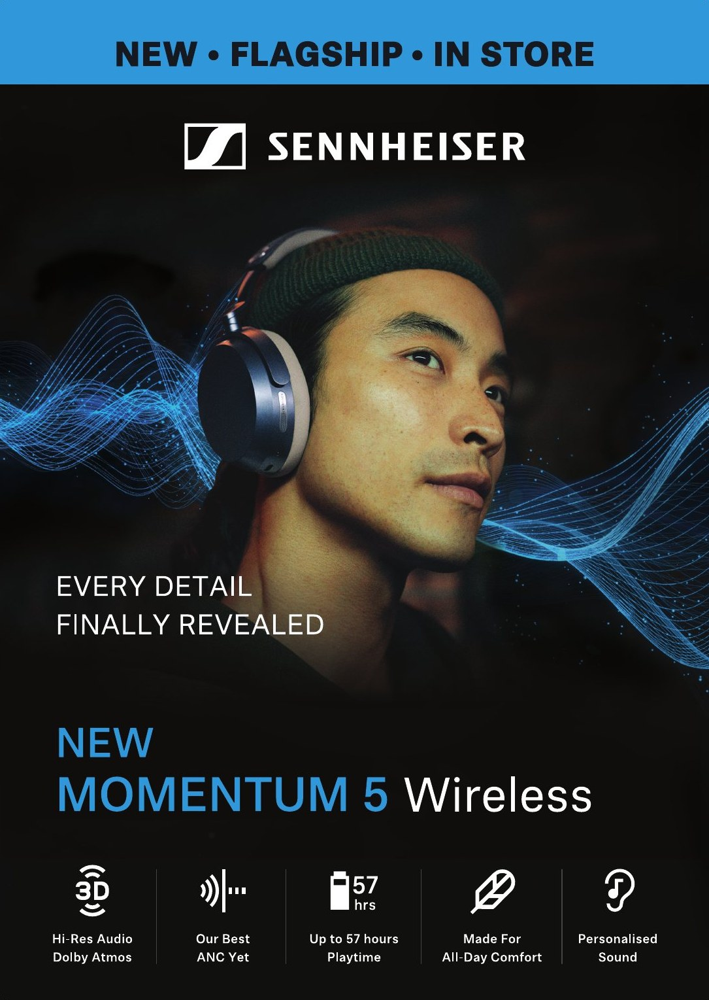
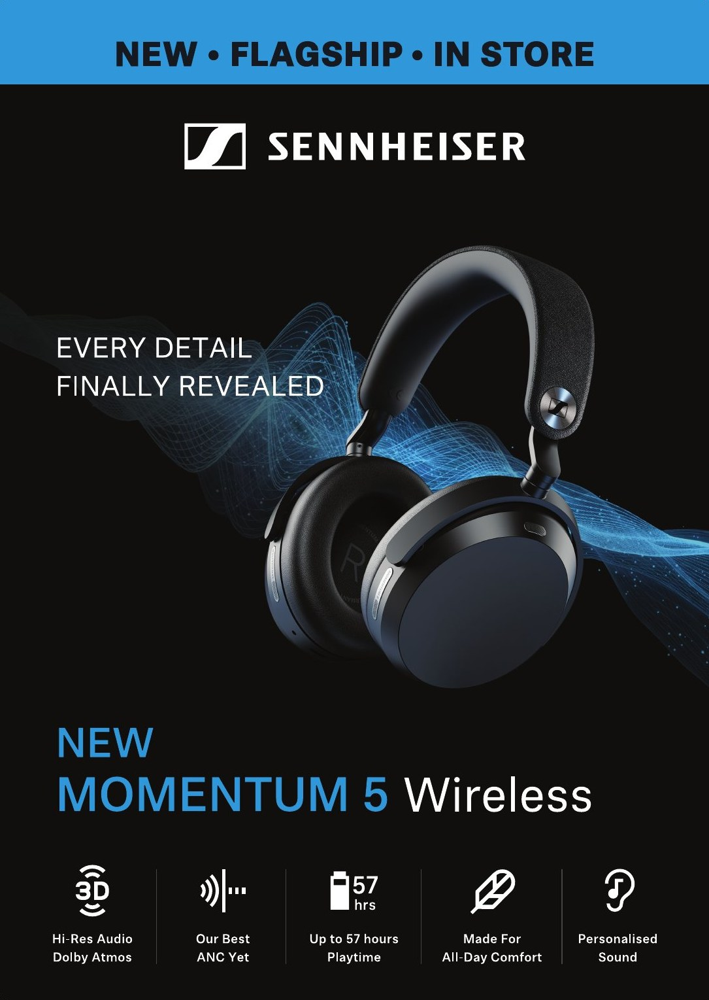
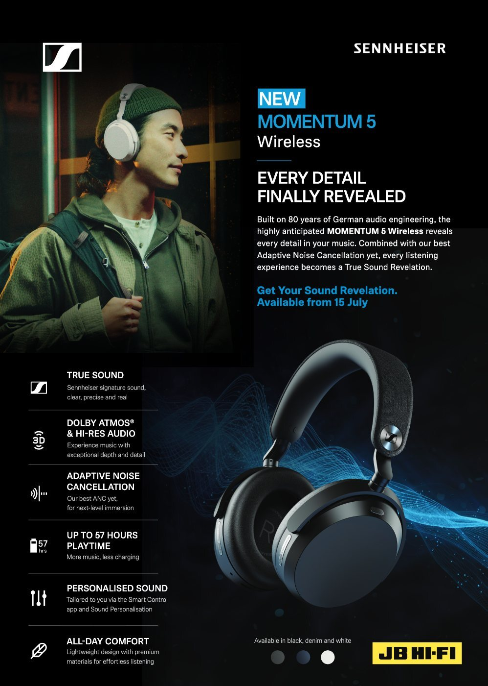
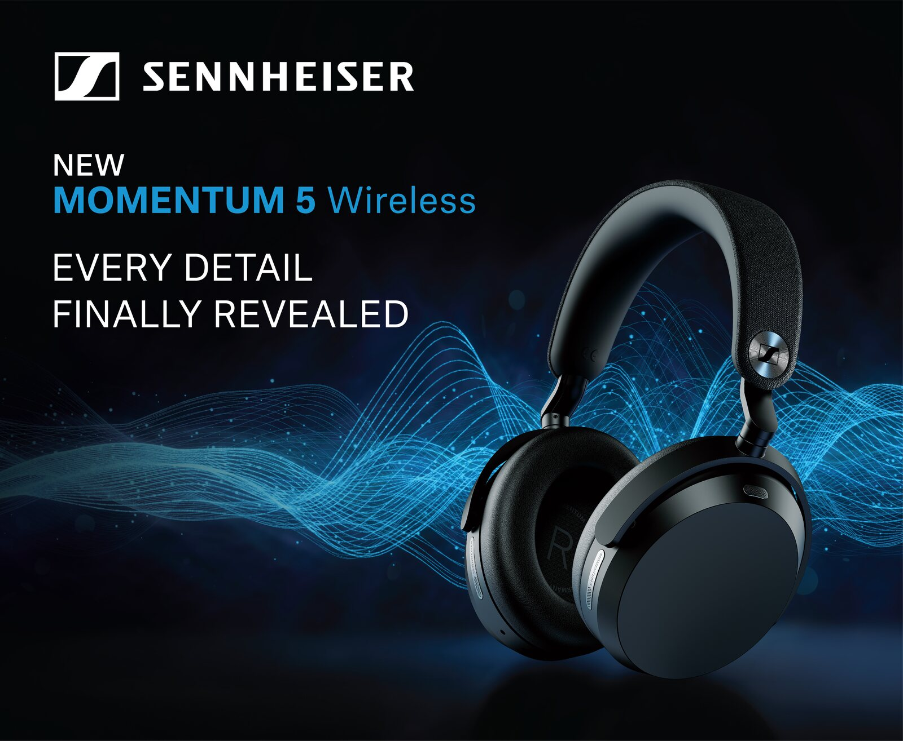
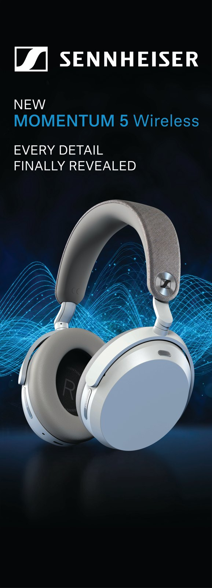
Also delivered: placards and lightbox headers, wobblers, gatefolds, roadshow panels, window artwork, eDMs, promo cards and a full page in Stack Magazine.
02 / Out of home
Each billboard network publishes its own pixel sizes. Every one needs the layout rebuilt, not just resized.
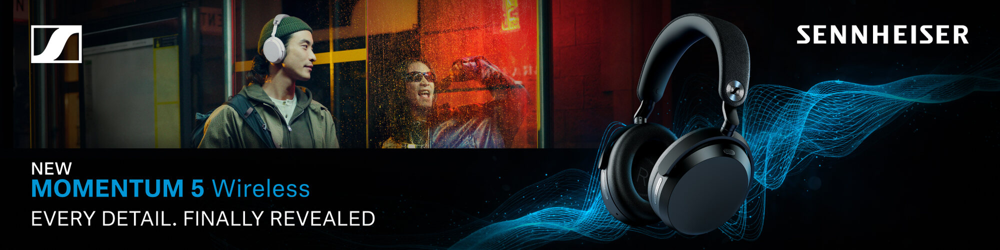
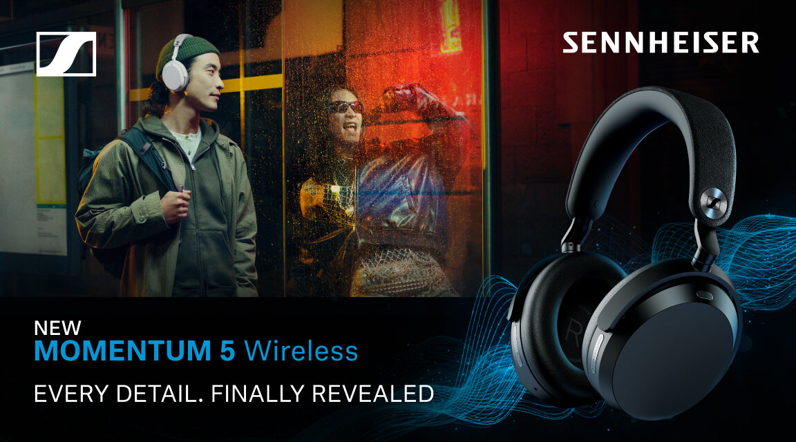
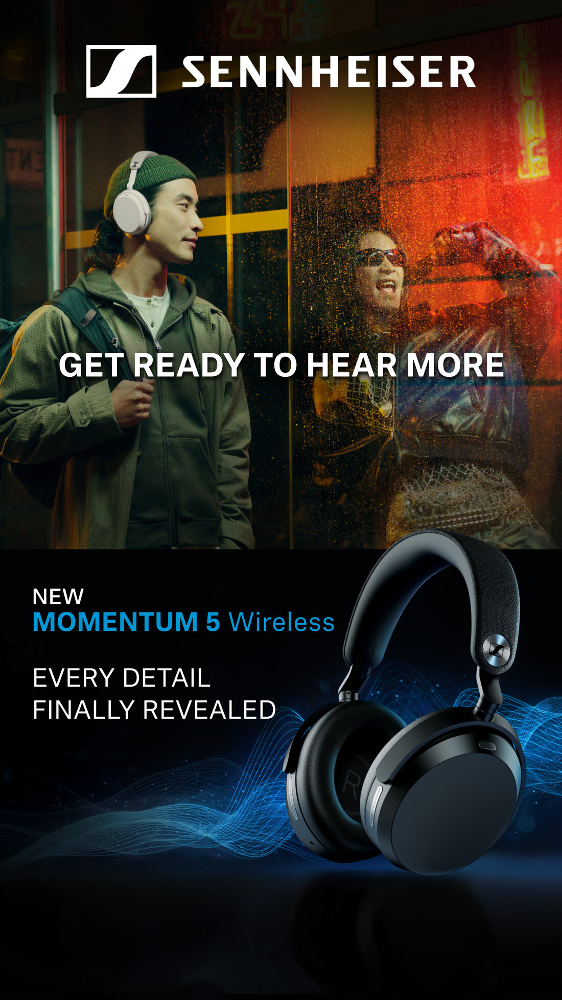
Also delivered: bus artwork and a 7 by 13 metre hand-painted mural.
03 / Video and social
The launch film and product films in 6, 15 and 30 seconds, and in wide, square and vertical.
Also delivered: Meta statics in square and vertical, Reddit statics and carousels, and in-store screen versions for retailers.
04 / How it ran
We designed the production around urgency and dependency, so the launch could move quickly without splintering.
You’d work with me on the brief and the priorities, with MONO’s designers, editors and animators behind it.
Retail deadlines set the order. The pieces with the earliest print and upload dates moved before anything else.
While those moved, a parallel team built the master key visuals that everything downstream adapts from.
Designers, editors and animators worked across retail, out-of-home, video, and social and print.
Every asset passed a two-stage quality check before it left.
After launch, MOMENTUM True Wireless 5 and ACCENTUM Clip followed on the same structure.
Sitting on good content?
If you have content that ran once and a list of places it should be, send it over and I’ll show you what else is in it.